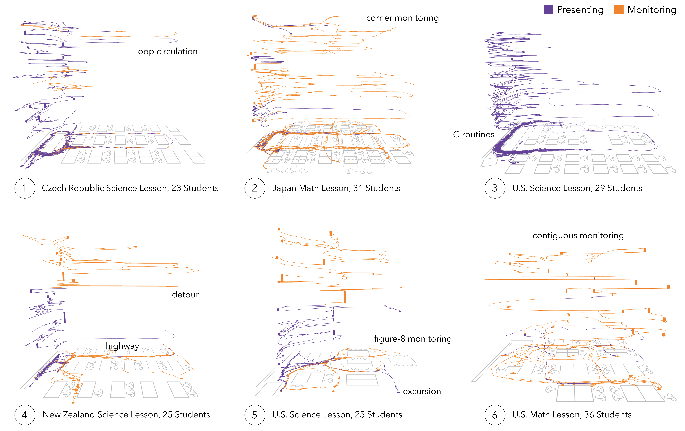

Figure 6. Annotated IGS screenshots showing six teachers’ movement over space and space-time across six different classroom lessons. Each case is set to the same spatial and temporal scales and labeled with the lesson’s country, content area, and number of students present. Annotations mark different phenomena made visible.
